SlyTab — the manual
SlyTab keeps track of money shared between people who know each other. A trip, a household, a dinner someone put on their card. You record what was spent, it works out who owes whom, and you settle up.
Every screenshot here is generated from the running app against fixed demo data, so what you see is what the app currently does — not what it looked like when someone last remembered to update a manual.
Signing in
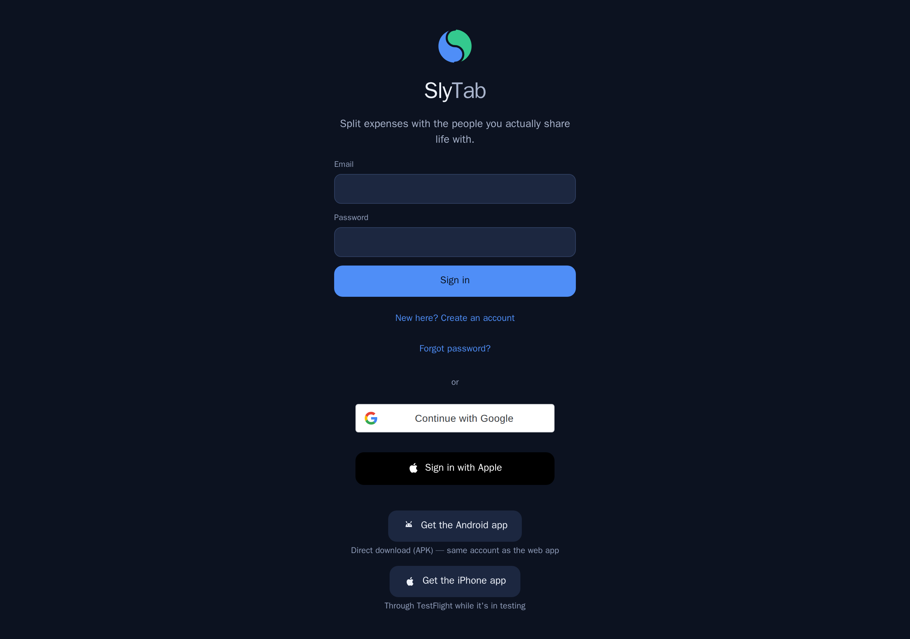
You can create an account with an email and password, or sign in with Apple or Google.
There is nothing to install: SlyTab runs in any browser, and there are iPhone and Android apps if you would rather have one on your phone. The same account works everywhere.
If someone has invited you to a group, sign in first and the invitation is applied automatically — you land in the group.
Home — where you stand
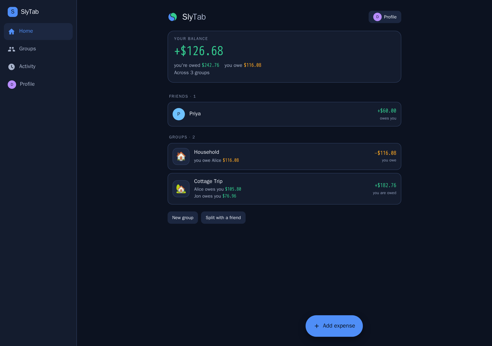
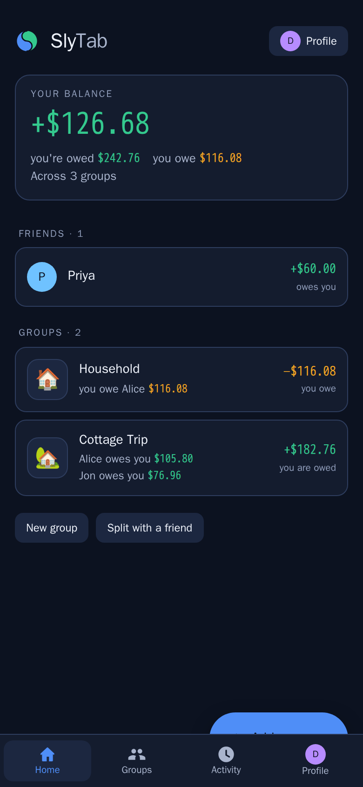
Home answers one question: across everything, who owes whom?
Each row is a person, not a group. If you and Alice share a household and a ski trip, you see one number for Alice — because when you settle up, you settle one number, not two.
Green means you are owed. Amber means you owe. "Settled" means exactly that.
The Add expense button is always in the bottom corner, on every screen where adding one makes sense.
On a narrow window the navigation moves to the bottom, the way it is on a phone.
Groups
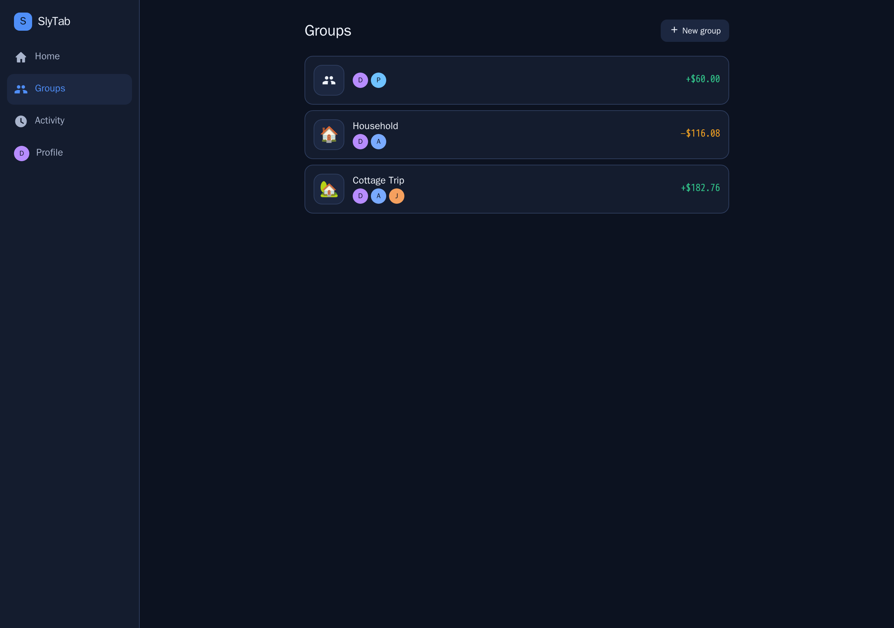
A group is a set of people and the expenses they share. A ski trip, a flat, a recurring dinner.
Each card shows the group's emoji, its members, and where you stand in that group specifically.
Groups you have finished with can be archived: they collapse out of the way but keep their history, so old balances stay honest.
One-to-one splitting needs no group at all — you can split directly with one person.
A group's expenses
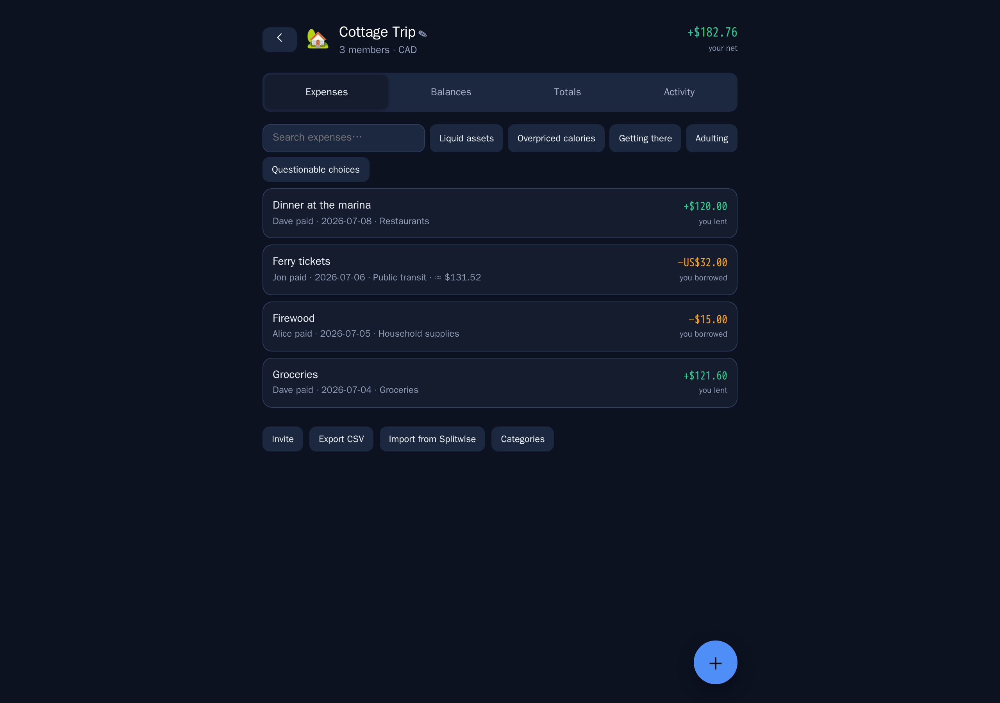
Every expense in the group, newest first, with what it was, who paid, and your share.
Search narrows the list. So do the category chips.
Tap any expense to edit it. Delete asks first, and can be undone straight afterwards.
Balances, and how to settle
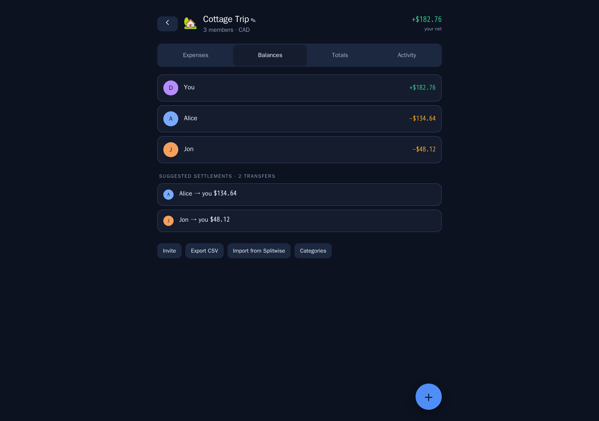
Balances shows what each person owes within this group, and — more usefully —
the shortest set of payments that clears everyone.
If Alice owes Ben, and Ben owes you, SlyTab does not make Alice pay Ben so Ben can pay you. It tells Alice to pay you directly. Fewer payments, same result.
Totals
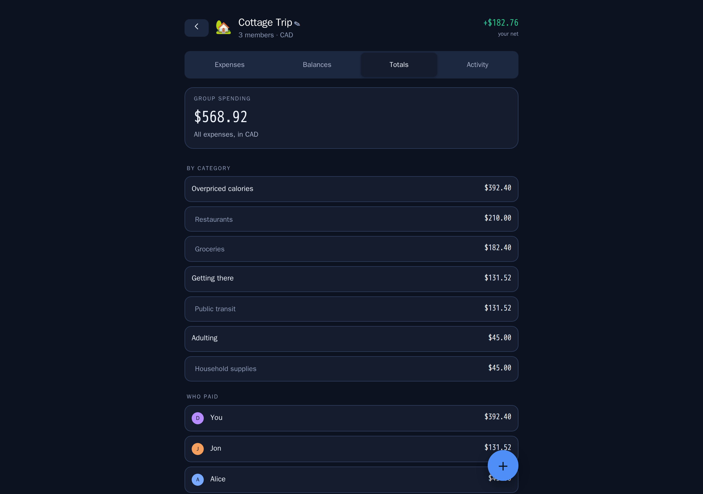
Where the money actually went: by person and by category.
Useful mid-trip, when someone asks whether the group is overspending on restaurants, and afterwards, when you want to know what a holiday really cost.
Adding an expense
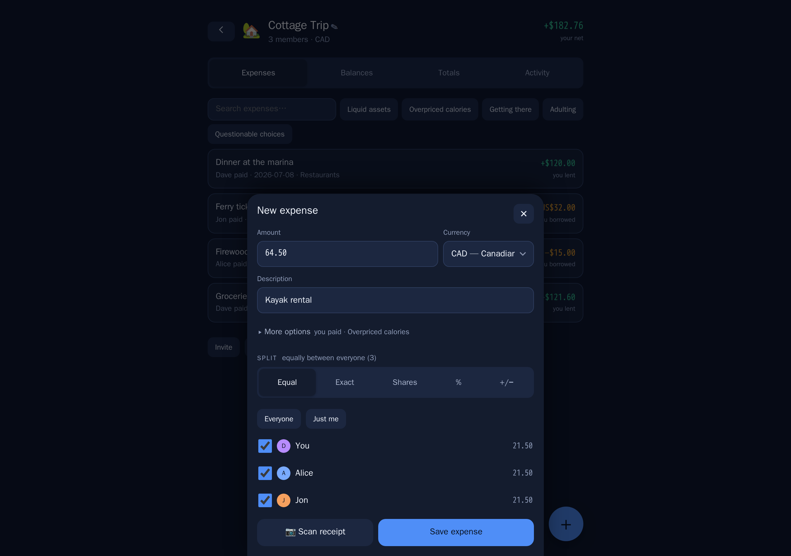
The fast path is three fields: what, how much, who paid. Everything else has a sensible default — today's date, an equal split, the group's currency.
When equal is not right:
| Method | Use it when |
|---|---|
| Equal | The usual case. Optionally exclude anyone who was not there. |
| Exact | You know each person's amount — a restaurant bill you have itemised. |
| Shares | Two of you had the double room and one had the single: 2 : 1. |
| Percent | A household splitting 60 / 40. |
| + / − | Split equally, then adjust one person up or down for the extra drink. |
More than one person can pay. If you put £60 on your card and Alice put £40 on hers, record both — the split and the paying are separate questions.
Scan the receipt instead of typing. Photograph it and the total, the date and the line items come back filled in. From there you can split by item, which is what you want when three of you shared the starter and one did not.
The receipt is read by a model running on our own server. No third-party service is configured, so receipts do not leave it. Location data is stripped from JPEG photos when they arrive.
Different currencies
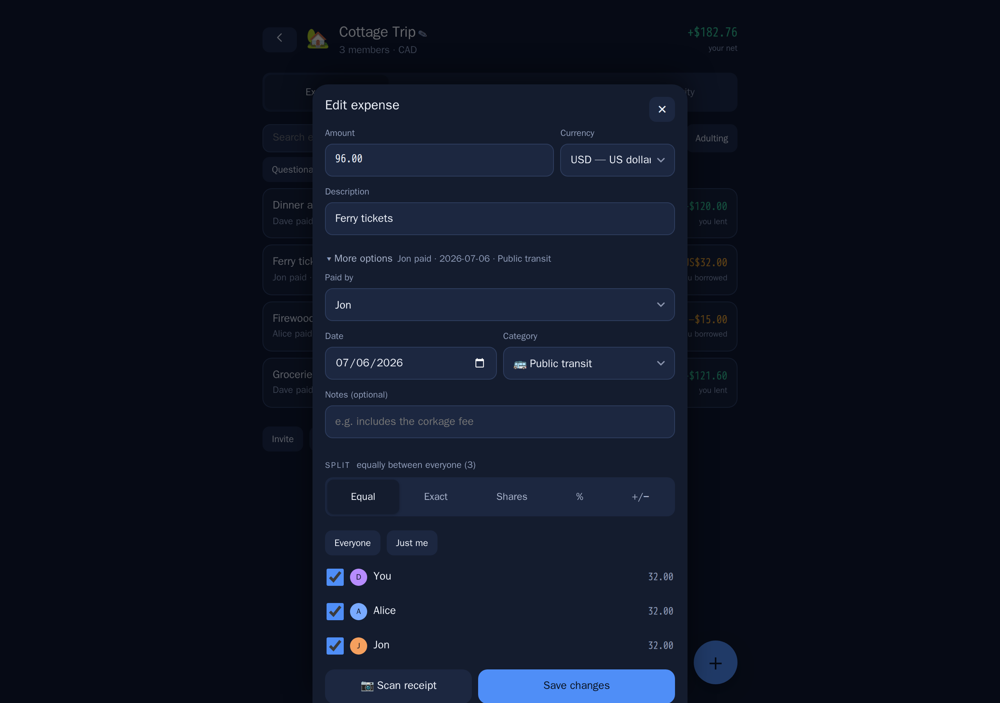
Enter an expense in the currency you actually paid in. SlyTab keeps that currency on the expense and converts it to the group's home currency using the reference rate for the date of the expense, then stores that rate on the expense.
That last part matters. Nothing re-values your history in the background, so a balance you agreed on last month does not quietly become a different number this month.
The original amount is always shown; the converted one is secondary.
If your card gave you a different rate, override it — enter the rate you were actually charged. One caveat worth knowing: if you later edit that expense, re-enter the override, because saving re-reads the rate for the date.
Currencies without decimal places — Chilean pesos, yen, won — are handled properly throughout. A total of 88.930 CLP means eighty-eight thousand nine hundred and thirty, and SlyTab reads it that way.
Settling up
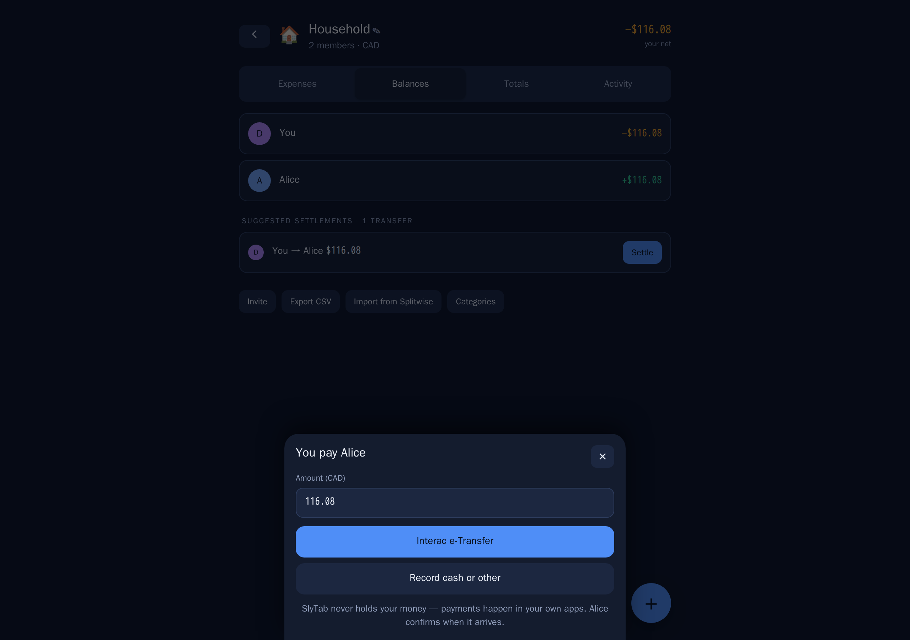
When someone pays you back, record it. They are asked to confirm, and once they do the balance between you clears.
SlyTab does not move money. It records that money moved. Your payment handles — Interac e-Transfer, PayPal.Me, Venmo — live on your profile so the other person can find them without asking.
Activity
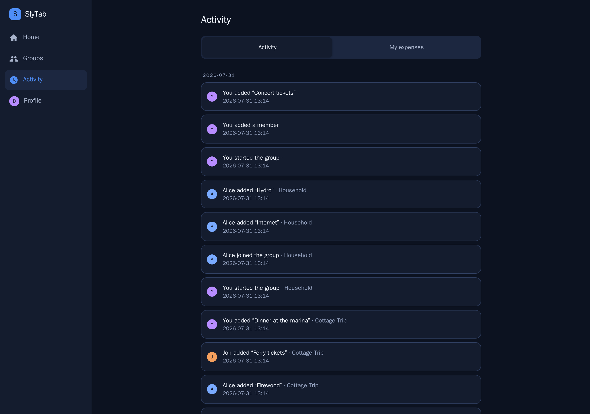
Everything that has happened across all your groups, newest first, grouped by day. Who added what, who confirmed a payment, who joined.
Useful when you open the app after a week away and want to know what changed.
Everything you have spent
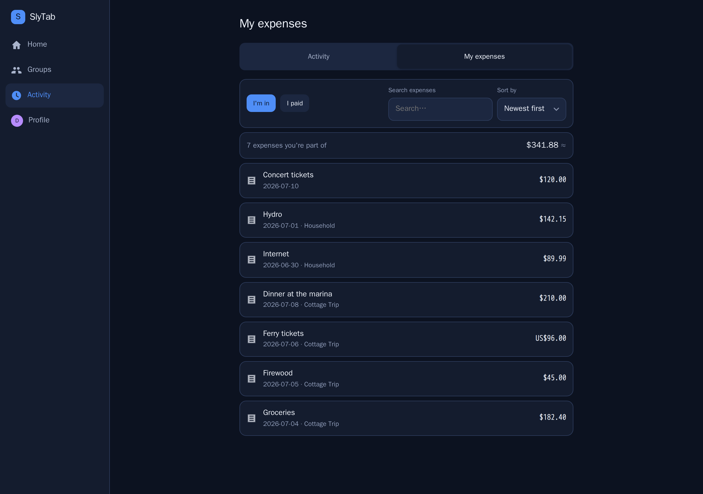
The My expenses tab answers a question no per-group screen can: what have I been spending, across everything?
Two views:
- I'm in — every expense you hold a share of, whoever entered it. This is
your money.
- I paid — the ones where your money actually went out.
Sort by newest, oldest, largest or smallest, search, and see a running total of your share — not the total of the bills, which would be someone else's number.
Profile and settings
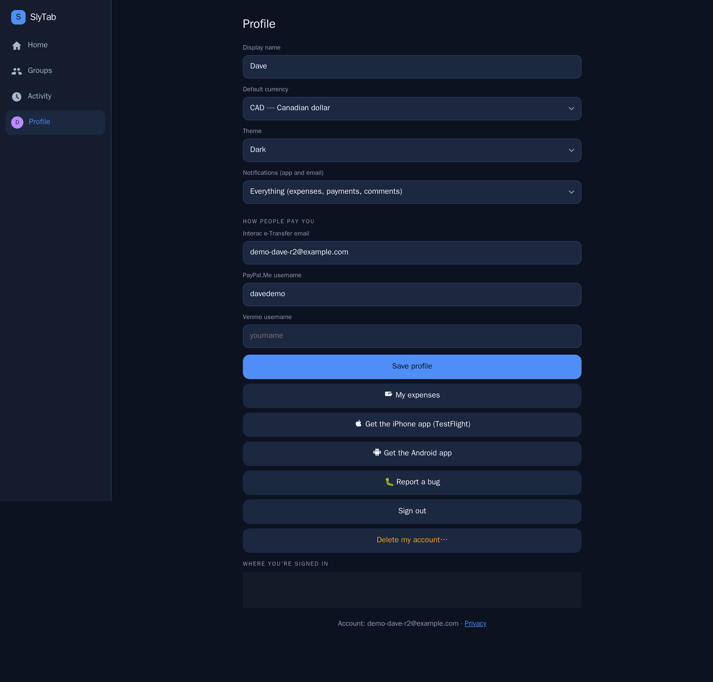
- Theme — match your device, or force dark or light.
- Default currency — what your balances are shown in.
- Notifications — everything, important only, or nothing.
- How people pay you — Interac, PayPal.Me, Venmo handles.
- Devices — every signed-in session, with the ability to revoke any of
them.
- Report a bug — goes straight to us with your app version attached, and
you get an email when it is fixed.
- Delete my account — really deletes it. Your share of shared history is
anonymised so nobody else's balances change.
Getting other people in
Three ways, in order of how little effort they take:
- People you already know — anyone from your other groups, one tap, no
email needed.
- A share link — send it however you like. It works for seven days and
can be revoked.
- By email — they get an invitation, and their share is tracked from the
moment you add them, whether or not they ever sign up.
Moving from Splitwise? Import a group directly, mapping their members onto people you already know. Anything already in SlyTab is skipped rather than duplicated.
Leaving a group
Open the group, tap its name, then Leave this group. You are asked to settle up first if you still owe or are owed anything.
Your past expenses stay, so nobody else's balance moves.